help
Every command below has already run. Click one to jump to it.
/about /experience /research /capstone /projects /education /skills /leadership /contact /resume
about
I am an electrical and computer engineering, applied physics, and mathematics student at Rutgers University-New Brunswick. I study how a thin film becomes a working quantum or oxide-electronic device: how it is designed, simulated, laid out and checked.
experience
Argonne National Laboratory · Quantum Computing Research Intern · June–August 2026
DOE SULI research on superconducting microwave resonators for electron-on-solid-neon devices, including HFSS eigenmode and driven-modal simulation, lithography-ready layouts, and materials characterization. I rebuilt four published resonators from their papers and designed a fifth.
Frequencies landed. Quality factors did not: a paper rarely gives enough detail to rebuild coupling and loss. So I added an audit step. It rejected several of my own early models and retracted some of my Q values. The table says what each model shows and what it does not.
| resonator | simulated vs paper | what it shows |
|---|---|---|
| Parallel-plate | 7.49999 vs 7.5 GHz | Frequency matched. Rebuilt with a coplanar-waveguide feed instead of the paper’s 3D cavity. Layer alignment and loss still open. |
| Spiral | 5.987 vs 6 GHz | Analytic, two-level-system and participation-ratio models reproduce the paper. The HFSS model fixes frequency only; its Q is unproven. |
| Interdigital capacitor | 7.2198 vs 7.24 GHz | Fit by construction: the paper never dimensions the capacitor, so I solved finger count and spacing from the target. Coupling cannot be rebuilt from the paper. |
| Flip-chip spin resonator | not reproduced | My bare-stack model is far from the paper’s 5.55 GHz and the coupling was far too weak. Kept for what it taught me about ports, moats and airbridges. |
| Fractal | not simulated | An original design with the physics taken from the literature. Layout only. |
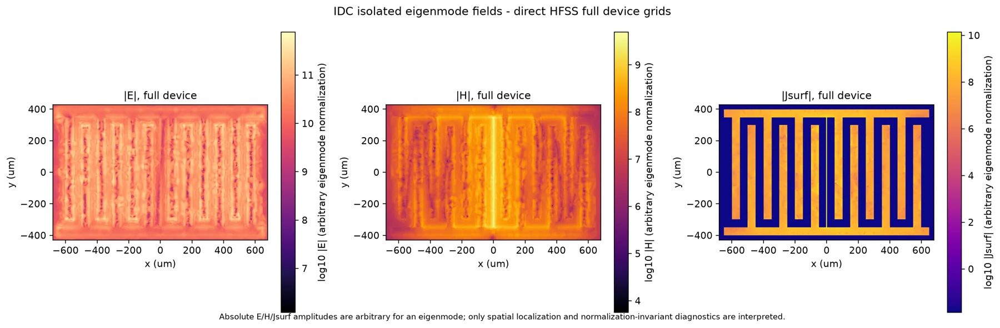
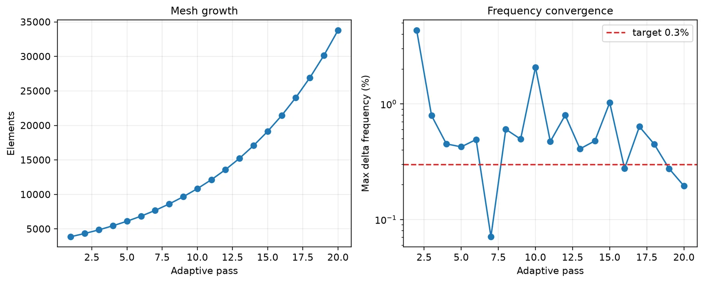
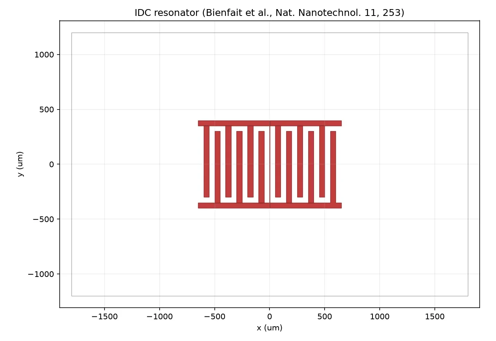
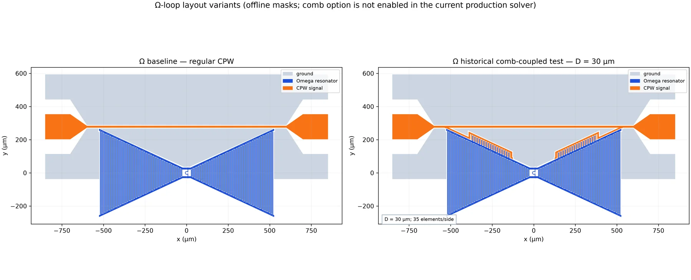
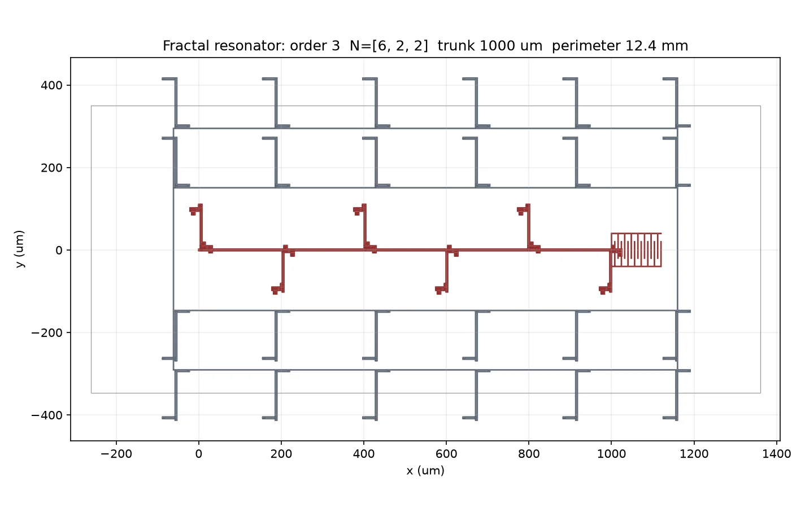
Condensed Matter Experiment Undergraduate Researcher · May 2025–present
Honors thesis research on gated Eu2Ir2O7 Hall-bar devices in Prof. Jak Chakhalian’s group at Rutgers: nanofabrication layout, cryogenic magnetotransport and data analysis. See /research for what exists so far.
NASA via NJSGC · Electronics & Power Intern · June–August 2024
Worked on electrical systems, PCB integration, and thermal control.
research
Chakhalian group, Rutgers Physics. I write parametric mask layouts, check them in black and white, and plan the measurements that would follow. Everything here is designed and verified on screen. None of it is a fabricated device yet.
| project | status | note |
|---|---|---|
| Fibonacci-etch silicon coupons | designed, not fabricated | Shallow-etch test chips whose line spacings follow Fibonacci words, order 4 to 11, inspired by Endo and Iye (PRB 78, 085311). Etched topography for practising the maskless write, not a replica of their device. |
| Gated SrRuO3 Hall bar | design | 18 nm film with a side gate for ionic-liquid gating. Two mask layers: one etches the film, one opens the liquid window. |
| Hall-bar generator, practice chips | layouts | Named layouts from a few parameters, with validation, plus practice chips on bare silicon to find the tool’s resolution floor. |
| Eu2Ir2O7 ionic gating | plan | Honors thesis plan: gate Hall bars with an ionic liquid and measure Rxx and Rxy against temperature and field. No gating data yet. |
| Angular magnetoresistance | preliminary | Reproducible notebook for a group dataset: forward and reverse sweeps, symmetry-restricted against exploratory harmonic fits. Single run. |
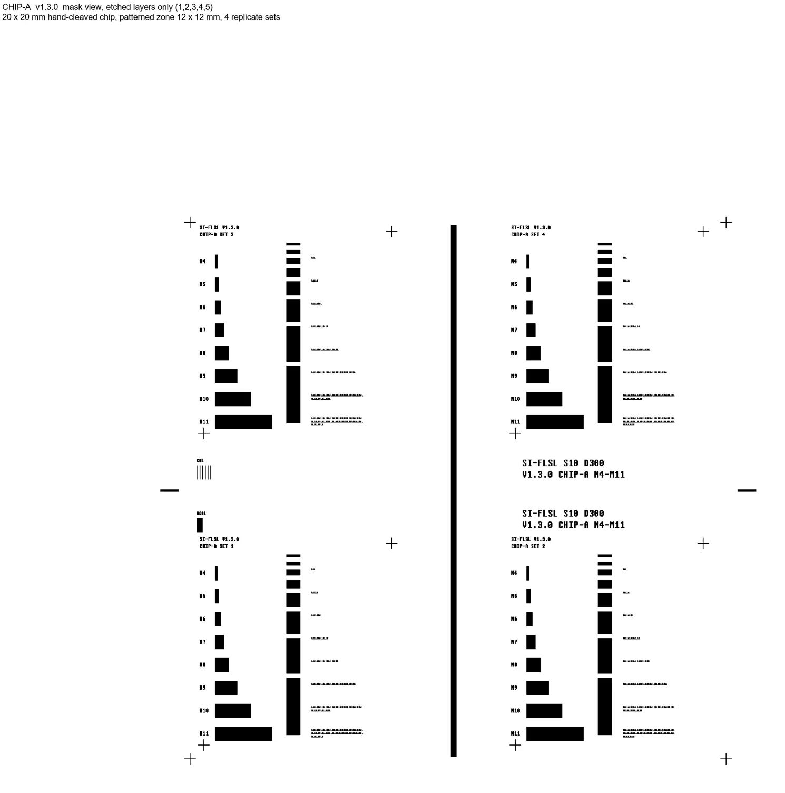
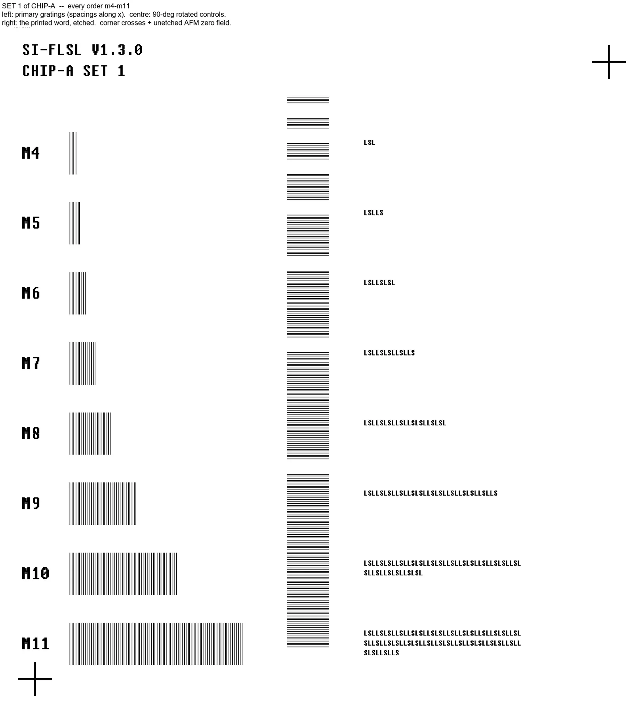
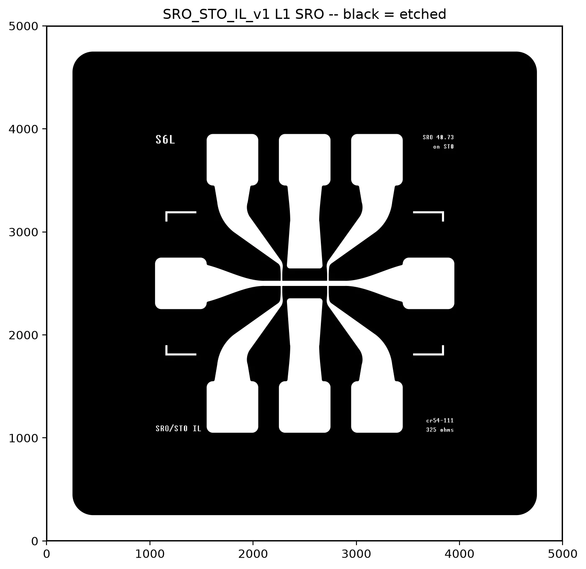
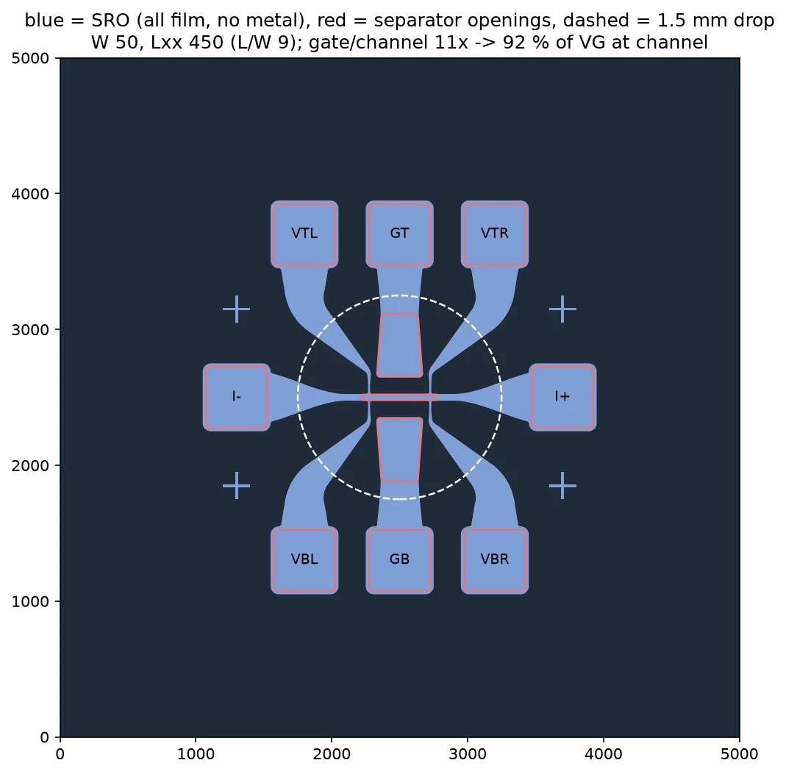
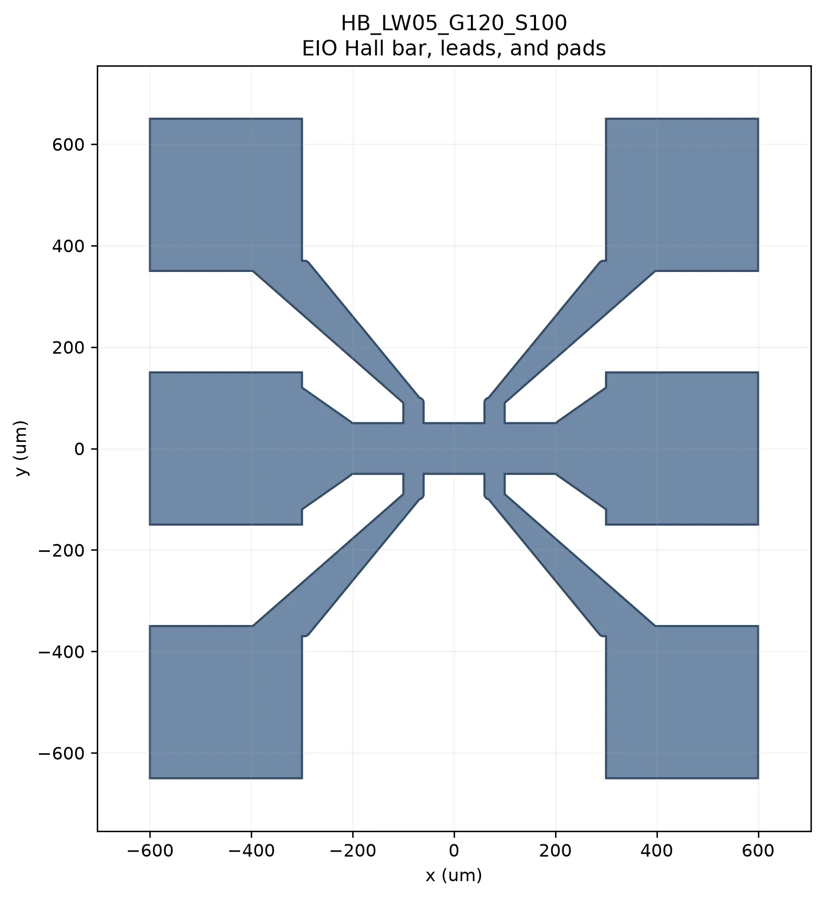
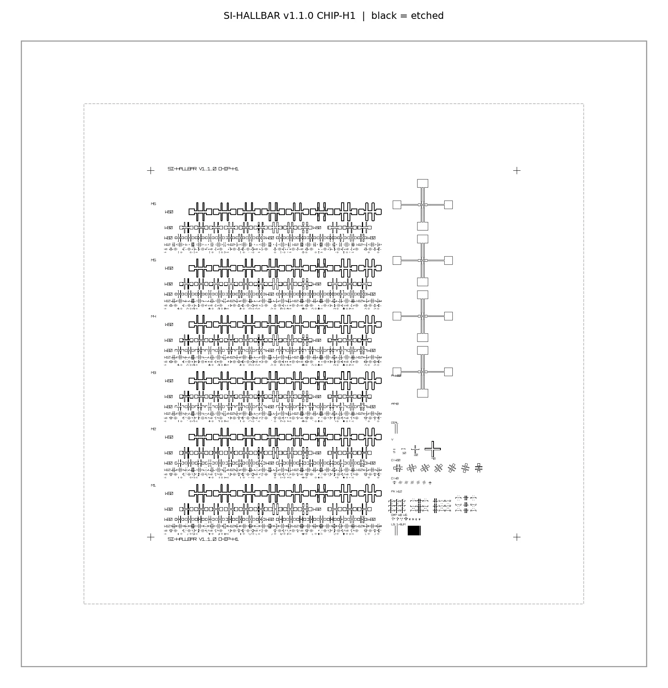
capstone
Rutgers ECE. I lead a team building a tunable, neuron-like device from a correlated oxide, advised by Prof. Shriram Ramanathan with Prof. Jak Chakhalian as co-advisor. The aim is one device whose response can be tuned the way a synapse is. We are at the design stage and the choice of material is still open.
projects
| project | stack | note |
|---|---|---|
| QResAudit | Python, PyAEDT | Packages simulation and measurement data into checksummed, auditable bundles. In development; I do not yet claim its HFSS export is validated. |
| Command Center | Electron | A desktop app I use to keep research tasks, notes and deadlines in one place. |
| Fly-by-wire | Python, ML | A shared project learning wiring rules from the fruit-fly connectome. Early. My first model underfit and we corrected it openly. |
| Device-independent QKD | Qiskit | Simulated CHSH games while studying quantum communication protocols. June–August 2024. |
education
Rutgers University-New Brunswick · New Brunswick, NJ
B.S. Electrical & Computer Engineering · B.S. Applied Physics · B.S. Mathematics · Expected May 2027 · GPA 3.8 / 4.0
skills
Python, C++, Qiskit, PyTorch, PyAEDT, HFSS, KiCad, PCB design, nanofabrication layout, cryogenic measurement, data analysis, VHDL, Verilog, and scientific computing.
leadership
Space Technology Association at Rutgers · Power Team Lead · September 2023–present
Lead the Power Team developing electrical systems for space technology projects.
Rutgers University Quantum Computing Group · President / Co-Founder · May 2024–present
Lead a student community exploring quantum computing through workshops, talks, and hands-on learning.
contact
The best way to reach me is by email. I am also active on GitHub and LinkedIn.
ahmadhhassan05@gmail.com GitHub · Ahmadh1231 LinkedIn · Ahmadh Hassan